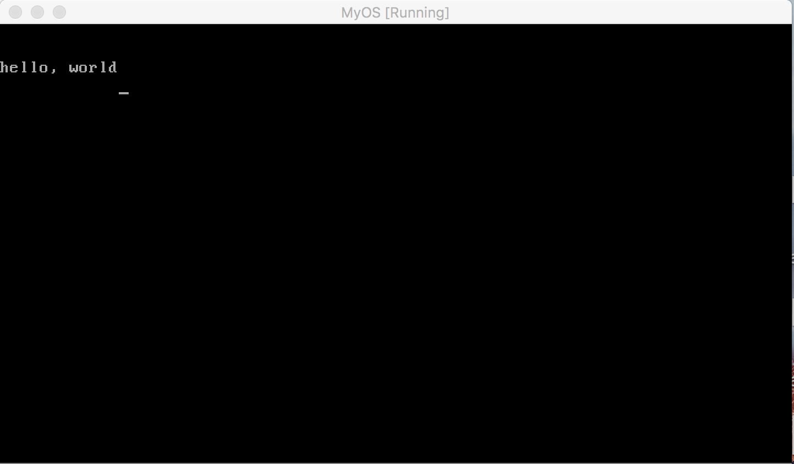
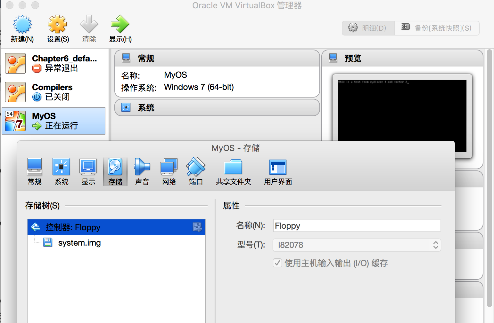
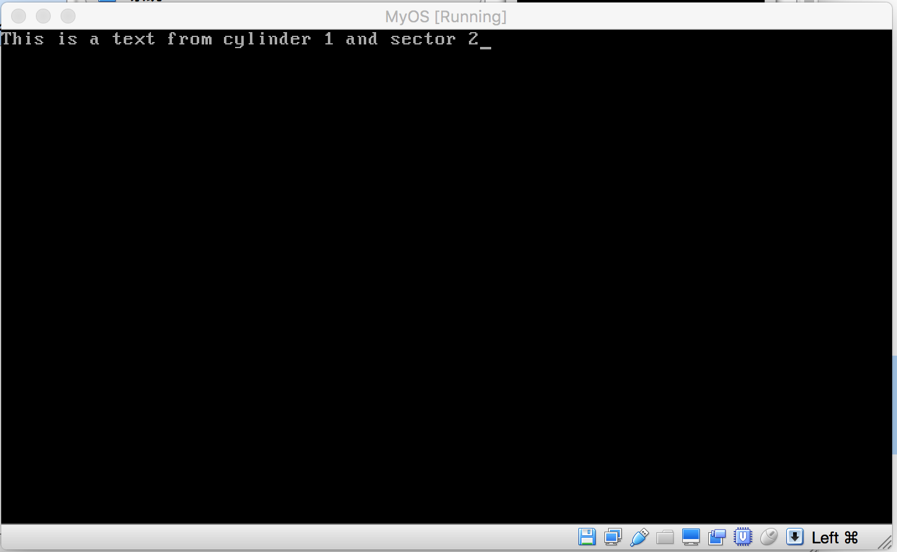

用java做操作系统内核：软盘读写
在前两节，我们将一段代码通过软盘加载到了系统内存中，并指示cpu执行加入到内存的代码，事实上，操作系统内核加载也是这么做的。只不过我们加载的代码，最大只能512 byte, 一个操作系统内核，少说也要几百兆，由此，系统内核不可能直接从软盘读入系统内存。
通常的做法是，被加载进内存的512 Byte程序，实际上是一个内核加载器，它运行起来后，通过读取磁盘，将存储在磁盘上的内核代码加载到指定的内存空间，然后再把cpu的控制权提交给加载进来的系统内核。
这就需要我们理解软盘的物理结构，以及软盘的数据读取方法。 
软盘的物理结构如上图，一个盘面被划分成若干个圆圈，例如图中的灰色圆圈，我们称之为磁道，也可以称作柱面，一个磁道或柱面，又被分割成若干部分，每一部分，我们称之为一个扇区，一个扇区的大小正好是512k,从而，当我们把数据存储到软盘上时，数据会分解成若干个512Byte大小的块，然后写入到扇区里。
要读取数据时，磁头会挪动到扇区所在的磁道或柱面，然后盘面转动，当要读取的扇区转到磁头正下方时，磁头通电，通过电磁效应将扇区的数据读取到内存中。
从上图的左边图形可以了解，一个磁盘有两个盘面，每个盘面的组成跟右边图形一样，同时每个盘面对应一个磁头，所以当想从磁盘上读取数据时，需要确定数据在哪一个盘面，从而确定要用哪一个磁头来读取数据，然后确定哪一个磁道，最后再确定要读取的数据都存储在哪一个扇区。
对于我们要开发的系统，我们要模拟的是3.5寸软盘，这种软盘的特点是，它有两个盘面，因此就对应两个磁头，每个盘面有80个磁道，也就是柱面，编号分别为0-79. 每个柱面都有18个扇区，编号分别为1-18. 所以一个盘面可以存储的数据量大小为：
512 * 18 * 80
一个软盘有两个盘面，因此一个软盘可以存储的数据为：
2 * 512 * 18 * 80 = 1474560 Byte = 1440 KB = 1.5M
接下来，我们用java来模拟一个3.5寸软盘，以及它的读写逻辑。
Floppy.java 用于实现虚拟软盘
import java.io.DataOutputStream;
import java.io.FileOutputStream;
import java.util.ArrayList;
import java.util.HashMap;
public class Floppy {
enum MAGNETIC_HEAD {
MAGNETIC_HEAD_0,
MAGETIC_HEAD_1
};
public int SECTOR_SIZE = 512; private int CYLINDER_COUNT = 80; //80个柱面 private int SECTORS_COUNT = 18; private MAGNETIC_HEAD magneticHead = MAGNETIC_HEAD.MAGNETIC_HEAD_0; private int current_cylinder = 0; private int current_sector = 0; private HashMap<Integer,ArrayList<ArrayList<byte[]>> > floppy = new HashMap<Integer,ArrayList<ArrayList<byte[]>> >(); //一个磁盘两个面 public Floppy() { initFloppy(); } private void initFloppy() { //一个磁盘有两个盘面 floppy.put(MAGNETIC_HEAD.MAGNETIC_HEAD_0.ordinal(), initFloppyDisk()); floppy.put(MAGNETIC_HEAD.MAGETIC_HEAD_1.ordinal(), initFloppyDisk()); } private ArrayList<ArrayList<byte[]>> initFloppyDisk() { ArrayList<ArrayList<byte[]>> floppyDisk = new ArrayList<ArrayList<byte[]>>(); //磁盘的一个面 //一个磁盘面有80个柱面 for(int i = 0; i < CYLINDER_COUNT; i++) { floppyDisk.add(initCylinder()); } return floppyDisk; } private ArrayList<byte[]> initCylinder() { //构造一个柱面，一个柱面有18个扇区 ArrayList<byte[]> cylinder = new ArrayList<byte[]> (); for (int i = 0; i < SECTORS_COUNT; i++) { byte[] sector = new byte[SECTOR_SIZE]; cylinder.add(sector); } return cylinder; } public void setMagneticHead(MAGNETIC_HEAD head) { magneticHead = head; } public void setCylinder(int cylinder) { if (cylinder < 0) { this.current_cylinder = 0; } else if (cylinder >= 80) { this.current_cylinder = 79; } else { this.current_cylinder = cylinder; } } public void setSector(int sector) { //sector 编号从1到18 if (sector < 0) { this.current_sector = 0; } else if (sector > 18) { this.current_sector = 18 - 1; } else { this.current_sector = sector - 1; } } public byte[] readFloppy(MAGNETIC_HEAD head, int cylinder_num, int sector_num) { setMagneticHead(head); setCylinder(cylinder_num); setSector(sector_num); ArrayList<ArrayList<byte[]>> disk = floppy.get(this.magneticHead.ordinal()); ArrayList<byte[]> cylinder = disk.get(this.current_cylinder); byte[] sector = cylinder.get(this.current_sector); return sector; } public void writeFloppy(MAGNETIC_HEAD head, int cylinder_num, int sector_num, byte[] buf) { setMagneticHead(head); setCylinder(cylinder_num); setSector(sector_num); ArrayList<ArrayList<byte[]>> disk = floppy.get(this.magneticHead.ordinal()); ArrayList<byte[]> cylinder = disk.get(this.current_cylinder); cylinder.set(this.current_sector, buf); } public void makeFloppy(String fileName) { try { DataOutputStream out = new DataOutputStream(new FileOutputStream(fileName)); for (int head = 0; head <= MAGNETIC_HEAD.MAGETIC_HEAD_1.ordinal(); head++) { for (int cylinder = 0; cylinder < CYLINDER_COUNT; cylinder++) { for (int sector = 1; sector <= SECTORS_COUNT; sector++) { byte[] buf = readFloppy(MAGNETIC_HEAD.values()[head], cylinder, sector); out.write(buf); } } } } catch (Exception e) { // TODO Auto-generated catch block e.printStackTrace(); } } } - 1
- 2
- 3
- 4
- 5
- 6
- 7
- 8
- 9
- 10
- 11
- 12
- 13
- 14
- 15
- 16
- 17
- 18
- 19
- 20
- 21
- 22
- 23
- 24
- 25
- 26
- 27
- 28
- 29
- 30
- 31
- 32
- 33
- 34
- 35
- 36
- 37
- 38
- 39
- 40
- 41
- 42
- 43
- 44
- 45
- 46
- 47
- 48
- 49
- 50
- 51
- 52
- 53
- 54
- 55
- 56
- 57
- 58
- 59
- 60
- 61
- 62
- 63
- 64
- 65
- 66
- 67
- 68
- 69
- 70
- 71
- 72
- 73
- 74
- 75
- 76
- 77
- 78
- 79
- 80
- 81
- 82
- 83
- 84
- 85
- 86
- 87
- 88
- 89
- 90
- 91
- 92
- 93
- 94
- 95
- 96
- 97
- 98
- 99
- 100
- 101
- 102
- 103
- 104
- 105
- 106
- 107
- 108
- 109
- 110
- 111
- 112
- 113
- 114
- 115
- 116
- 117
- 118
- 119
- 120
- 121
- 122
- 123
- 124
- 125
- 126
读写虚拟软盘需要调用接口readFloppy 或 writeFloppy, 使用这些接口时必须指定磁头，柱面和扇区号，在主程序中，我将上节用汇编编译的操作系统内核写入到虚拟软盘中，然后将虚拟软盘写成磁盘文件, 具体代码如下：
import java.io.DataOutputStream;
import java.io.File;
import java.io.FileInputStream;
import java.io.FileNotFoundException;
import java.io.FileOutputStream; import java.io.IOException; import java.io.InputStream; import java.util.ArrayList; public class OperatingSystem { private Floppy floppyDisk = new Floppy(); private void writeFileToFloppy(String fileName) { File file = new File(fileName); InputStream in = null; try { in = new FileInputStream(file); byte[] buf = new byte[512]; buf[510] = 0x55; buf[511] = (byte) 0xaa; if (in.read(buf) != -1) { //将内核读入到磁盘第0面，第0柱面，第1个扇区 floppyDisk.writeFloppy(Floppy.MAGNETIC_HEAD.MAGNETIC_HEAD_0, 0, 1, buf); } } catch(IOException e) { e.printStackTrace(); return; } } public OperatingSystem(String s) { writeFileToFloppy(s); } public void makeFllopy() { floppyDisk.makeFloppy("system.img"); } public static void main(String[] args) { OperatingSystem op = new OperatingSystem("boot.bat"); op.makeFllopy(); } } - 1
- 2
- 3
- 4
- 5
- 6
- 7
- 8
- 9
- 10
- 11
- 12
- 13
- 14
- 15
- 16
- 17
- 18
- 19
- 20
- 21
- 22
- 23
- 24
- 25
- 26
- 27
- 28
- 29
- 30
- 31
- 32
- 33
- 34
- 35
- 36
- 37
- 38
- 39
- 40
- 41
- 42
- 43
- 44
- 45
- 46
- 47
- 48
- 49
上面的代码运行后，在项目的根目录会生成一个system.img虚拟软盘文件，将该软盘加入虚拟机，我们制作的操作系统内核就能被虚拟机执行了：

上面代码可以通过如下git 命令下载：
git clone https://github.com/wycl16514/OS-kernel-development.git
用汇编语言实现软盘读写
使用汇编读取软盘的原理与上面描述的相同，我们要调用相应的BIOS中断，同时将要读取的磁头号，柱面，扇区号传给中断代码，读取软盘的汇编代码如下：
mov CH, 1 ;CH 用来存储柱面号
mov DH, 0 ;DH 用来存储磁头号
mov CL, 2 ;CL 用来存储扇区号
mov BX, msg ; ES:BX 数据存储缓冲区
mov AH, 0x02 ; AH = 02 表示要做的是读盘操作
mov AL, 1 ; AL 表示要练习读取几个扇区
mov DL, 0 ;驱动器编号，一般我们只有一个软盘驱动器，所以写死
;为0
INT 0x13 ;调用BIOS中断实现磁盘读取功能
JC error ; 如果读盘出现错误，跳转到error处执行相应代码
在计算机硬件中，有一个隐含的寄存器叫FLACS, 当BIOS调用出现错误时，FLACS寄存器的 CF 位会置1，同时把错误代码存入AH,如果没有错，那么FLACS寄存器的CF位会设置为0，所以 JC error 的意思是：
if (FLACS.CF == 1) {
error();
}
在前面，我们的内核加载到内存后,会打印出一条语句，而语句与内核代码都存储在同一个扇区中，这一次，我们将要打印的语句存储在第一柱面的第二扇区，内核加载如内存后，通过BIOS调用将要打印的语句从指定位置读出，然后再显示到屏幕上，代码如下：
org 0x7c00;
jmp entry
db 0x90
DB "OSKERNEL" DW 512 DB 1 DW 1 DB 2 DW 224 DW 2880 DB 0xf0 DW 9 DW 18 DW 2 DD 0 DD 2880 DB 0,0,0x29 DD 0xFFFFFFFF DB "MYFIRSTOS " DB "FAT12 " RESB 18 entry: mov ax, 0 mov ss, ax mov ds, ax mov es, ax mov si, msg readFloppy: mov CH, 1 ;CH 用来存储柱面号 mov DH, 0 ;DH 用来存储磁头号 mov CL, 2 ;CL 用来存储扇区号 mov BX, msg ; ES:BX 数据存储缓冲区 mov AH, 0x02 ; AH = 02 表示要做的是读盘操作 mov AL, 1 ; AL 表示要练习读取几个扇区 mov DL, 0 ;驱动器编号，一般我们只有一个软盘驱动器，所以写死 ;为0 INT 0x13 ;调用BIOS中断实现磁盘读取功能 jc error putloop: mov al, [si] add si, 1 cmp al, 0 je fin mov ah, 0x0e mov bx, 15 int 0x10 jmp putloop fin: HLT jmp fin error: mov si, errmsg ;出现错误打印error jmp putloop msg: RESB 64 errmsg: DB "error" - 1
- 2
- 3
- 4
- 5
- 6
- 7
- 8
- 9
- 10
- 11
- 12
- 13
- 14
- 15
- 16
- 17
- 18
- 19
- 20
- 21
- 22
- 23
- 24
- 25
- 26
- 27
- 28
- 29
- 30
- 31
- 32
- 33
- 34
- 35
- 36
- 37
- 38
- 39
- 40
- 41
- 42
- 43
- 44
- 45
- 46
- 47
- 48
- 49
- 50
- 51
- 52
- 53
- 54
- 55
- 56
- 57
- 58
- 59
- 60
- 61
- 62
- 63
- 64
- 65
- 66
- 67
- 68
- 69
在上面的汇编代码中，readFloppy将要打印的字符串从磁盘中读出来，放入到缓冲区msg中，大家注意，msg下面是语句 RESB 64, 这一句的意思是分配64个字节的缓冲区。
将上面的汇编代码存成文件boot.asm ,然后使用命令：
nasm boot.asm -o boot.bat
把上面代码编译成二进制文件boot.bat.接下来，我们在生成虚拟软盘的java代码中把把要输出的语句写入到虚拟软盘的1柱面，2扇区，代码如下：
public void makeFllopy() {
String s = "This is a text from cylinder 1 and sector 2";
floppyDisk.writeFloppy(Floppy.MAGNETIC_HEAD.MAGNETIC_HEAD_0, 1, 2, s.getBytes()); floppyDisk.makeFloppy("system.img"); }- 1
- 2
- 3
- 4
- 5
- 6
上面的代码中，我们把s字符串写入虚拟软盘的0磁头，1柱面，2扇区。把上面编译好的boot.bat也放入到java工程目录下，然后运行java代码，运行后在目录下会生成一个system.img虚拟映像，然后将该文件作为启动软盘加入虚拟机：

然后启动虚拟机，可以看到，我们的系统内核将字符串从软盘的1柱面，2扇区中读出来，显示到屏幕上：

代码可以根据以下的git 命令获取：
git clone https://github.com/wycl16514/OS-kernel-development.git